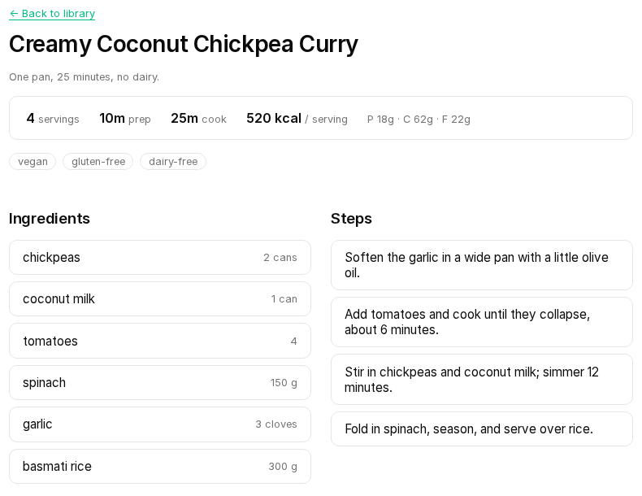
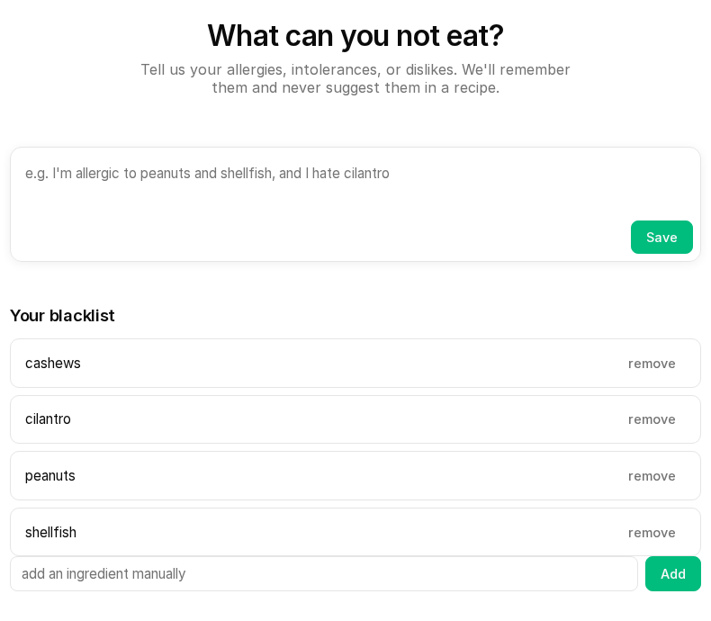

macOS
DietApp · Apple Silicon and Intel.
tar xzf dietapp-darwin-arm64.tar.gz
Download
Intel build
Download
DietApp is the full app for macOS, Linux and Windows — self-hosted, with local AI and your data in one SQLite file. DietApp Lite is the lightweight Android app that connects to DietApp Cloud or your own DietApp server.
DietApp · Apple Silicon and Intel.
DietApp · static binary, any distro.
DietApp · no WSL required.
DietApp Lite · the mobile app.
Same checks, nothing to install.
SHA-256 (desktop DietApp v1.1.2 · Android DietApp Lite v1.1.1). Compare with sha256sum on macOS/Linux or Get-FileHash in PowerShell.
dietapp-android.apk 33b67bb82f8b773455ae3dac22500dde14ab626433524164764cdee58a07c28c dietapp-darwin-arm64.tar.gz a833bedd93b7962a64936a6de1fef2ec78260c4cb754b738ec4bb8d99e8b2d16 dietapp-darwin-amd64.tar.gz 9f244918187b649b0a2229612bead3dafd02f89b3a31ecaab084f2923b4daedc dietapp-linux-amd64.tar.gz e76eb76643c0e86ce38a44b0859571137022da8bc9615b6235d120efd5830869 dietapp-linux-arm64.tar.gz bd3426c680635042203204627e04773518b7f87357b752ea8baeb5e9c28ebe42 dietapp-windows-amd64.zip 5e3f86f6ca61f5b506721114e035488e97cbe495e0059b21e70e6dc2968cca18
DietApp desktop bundles are attached to the v1.1.2 release; the DietApp Lite APK is the signed Android 1.1.1 build.
Cloud opens the hosted web app in your browser. Your DietApp server must be on the same network — find its LAN IP with ip addr or ipconfig.
Upgrading from v1.0? Uninstall it first — the signing key changed.
Add an AI key in .env (see .env.example), or run a local model.
DietApp: the recipe page and onboarding.


Install DietApp on your desktop, or get DietApp Lite on your phone. The check comes first.